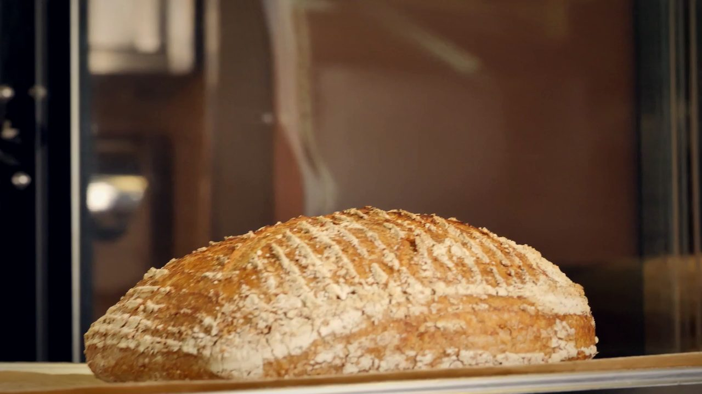

O forno acende às 4h.
A porta abre às 6h, com o pão francês no balcão. Fornada nova toda hora cheia, até as 19h.
Fornadas
Pão saindo toda hora cheia.
Das 6h às 19h. Confira a próxima e chegue com o pão ainda quente.
Próxima fornada
Faltam
Sai: pão de queijo e sonho
Hoje no forno
Natal
Encomendas de Natal até 20/12.
Panetone de fermentação natural, chocotone, tender e cestas, separados com o seu nome para retirar de 21 a 24/12.
Encomendas fecham em
dias
Domingo, 20/12, às 13h. Natal em 16 dias.
- Escolha na aba Natal do cardápio. Marque os itens e a quantidade.
- Mande o pedido pelo WhatsApp até 20/12. A mensagem já vai com os itens que você marcou.
- Retire no balcão de 21 a 24/12. Fica separado com o seu nome. Paga na retirada.
Horários de fim de ano
Como chegar
Rua Alcina Prado, 214.
Vila Serena, em frente à praça, ao lado da lotérica.
Aberta agora · fecha às 20h
- Segunda a sexta6h às 20h
- Sábado6h às 18h
- Domingo7h às 13h
- Fim de anohorários especiais

Encomendas
Peça pelo WhatsApp e retire sem fila.
- Mande a lista até as 18h. Vale para o dia seguinte também.
- A gente separa no saco, com o seu nome. O pão sai da fornada mais perto da hora que você marcar.
- Retire no caixa a partir das 6h. Paga na hora, no Pix ou no cartão.
Entrega na Vila Serena de segunda a sábado, das 7h às 11h. Taxa de R$ 5.